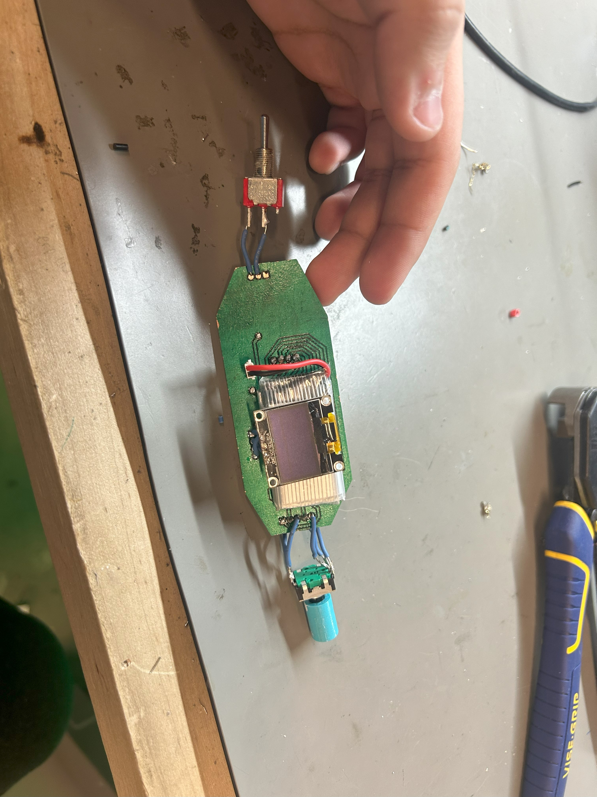
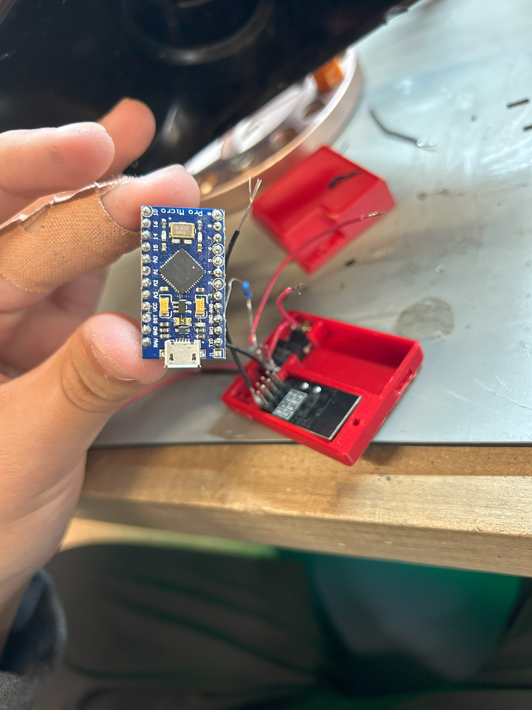
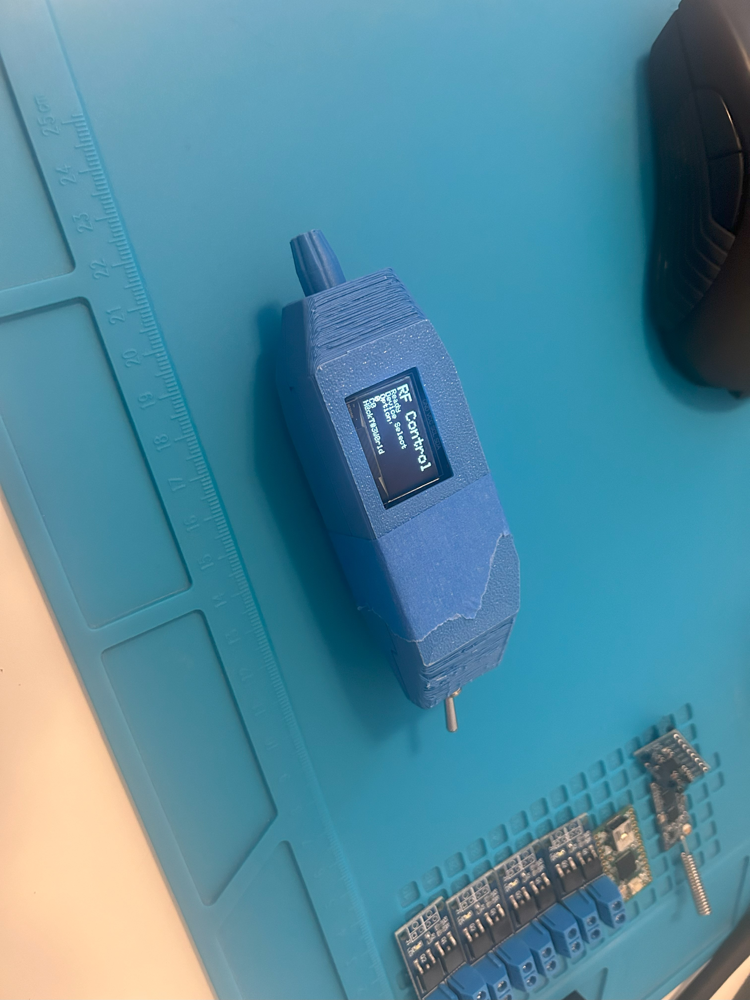

Overview
This project was a personal exploration into RF modules and PCB fabrication. I wanted a device that could selectively activate any device outfitted with a matching module or MOSFET switch. The opportunity to fabricate my own PCB was especially important as it was my responsibility as Electronics Apprentice to create a procedure for a new PCB mill at the Invention Studio.
Circuit Design
Using KiCAD, I designed a schematic for a microcontroller-based circuit that interfaced with an RF module and supported MOSFET switch control. I explored various RF communication libraries and protocols to ensure reliable signal transmission.


PCB Fabrication
I fabricated a custom PCB using the Invention Studio's new PCB mill. I developed a procedure for the mill, learning FlatCAM to convert my KiCAD designs into machine-readable G-code. This involved iterative testing to perfect milling parameters, ensuring clean traces and reliable boards.


Results
The enclosure, designed in SolidWorks and 3D-printed, was tailored to fit the compact PCB while maintaining accessibility for controls and the OLED display. The final remote successfully activated devices with reliable performance across a 10-meter range.